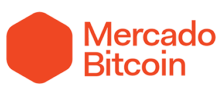
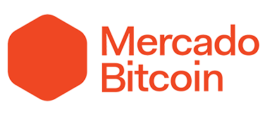

sobre
Gerente de Produtos por coração, Gerente de Projetos, Diretor de Criação experiente, Designer de Produtos inovador, Designer apaixonado, autodidata, proativo, comunicador efetivo. Pessoa criativa e ambiciosa que ao longo de sua carreira como Designer e Diretor de Arte em vários projetos de TI e diferentes tipos de conteúdo para empresas americanas, logrou êxito em seus desafios acadêmicos e busca conhecimento continuamente, desenvolveu habilidades desconhecidas e procura grandes desafios todos os dias.
Desculpe mas meu Portfólio completo não pode ser público no momento, aqui você encontra alguns de meus trabalhos.
Você pode encontrar um pouco sobre mim no LinkedIn e Dribbble.

skills técnicas
Como um bom solucionador de problemas, ao longo de minha carreira sempre busquei traçar novos caminhos e explorar ao máximo minha criatividade. Aprendi e desenvolvi diversas técnicas, utilizei e aprimorei meu conhecimento em vários softwares e entendi a necessidade da organização e gestão através de metodologias que funcionam. Hoje busco aprender cada vez mais e tento aplicar tudo o que aprendi em meu dia a dia.
Photoshop e AfterEffects foram meus principais aliados durante anos. Utilizei também Sketch, Adobe XD e posteriormente Figma durante todo o período em que trabalhei com desenvolvimento de interfaces, sendo o Figma ainda hoje minha ferramenta principal para desenvolver conceitos e transmitir para a equipe a necessidade do cliente.
Metodologias ágeis e abordagens como Design Thinking fazem parte da minha rotina, mantendo meu workflow organizado e garantindo as entregas dentro do produto.
trabalhos


formação
Passei 3 anos aprendendo sobre Design e após receber meu diploma de Designer Gráfico decidi que queria continuar estudando, onde iniciei meu Mestrado em Direção de Arte voltado para Marketing.
(Master degree)
(Bachelor degree)
(Certification)
(Certification)
(Certification)
(Certification)
experiência de trabalho
Como Product Manager no Mercado Bitcoin meu foco principal é explorar e aprimorar nosso principal produto, nossa plataforma de Trade de Criptomoedas e Digital Assets. Tendo a oportunidade de ingresssar em projeto grande como este, na maior Exchange de Criptomoedas da América Latina, a oportunidade de compartilhar conhecimento e aprender mais sobre o mundo dos Criptoativos para construir um ótimo produto é algo que alegra todos os dias. Responsável por maximizar o valor resultante do produto desenvolvido, minha principal responsabilidade é aprimorar e evoluir nossa atual plataforma, além de garantir o entendimento claro de todas as necessidades do requisitante para todos do time.
Como parte da minha jornada na Opah, trabalho próximo à grandes clientes como CVC Corp, Crefisa, Webmotors, entre outros. Formo e coordeno times para garantir o máximo de performance, provendo objetivo, direcionamento e motivação. Lidero projetos desde a definição de requisitos até a entrega, definindo cronogramas, escopo, financeiro e planos de implementação, incluindo análise de riscos. Coordeno recursos internos e externos, garanto foco no escopo do projeto, cronograma e orçamento definido, junto aos gestores de vários departamentos. Supervisiono e analiso o progresso do projeto e, quando necessário, adaptar o escopo, cronograma de entregas e custos para garantir que a realidade bata com os requisitos. Estabeleço e mantenho relacionamento com o cliente e partes interessadas, através de contato diário com o andamento do projeto e suas mudanças.
Responsável por maximizar o valor resultante do produto desenvolvido, minha principal responsabilidade foi gerenciar o Product Backlog, além de garantir o entendimento claro de todas as necessidades do requisitante. Asseguro a integridade conceitual das funcionalidades, indico bugs e melhorias a serem feitas e a entrega final do projeto ou produto, atestando sua qualidade.
No âmbito das minhas atividades ressalto a análise de requisitos, sejam eles funcionais, não-funcionais, de usuários, dos clientes e análise de negócios, incluindo a especificação, análise de sistemas e especificações funcionais para o desenvolvimento de softwares. Além disso, importante mencionar o desenvolvimento dos mapas de processos de negócio que possibilitam a identificação e monitoramento de riscos de TI, bem como o acompanhamento do desempenho de processos, controlando, otimizando e verificando se cumprem os padrões necessários para a realização dos projetos. Por fim, documento os processos, relatando possíveis falhas para a realização de ações preventivas nas próximas etapas e treinando equipes de TI para garantir a qualidade.
Como Product Manager na Bloov meu foco principal sempre foi criar o melhor produto possível dentro das minhas habilidades. Tendo a oportunidade de começar esse projeto do zero, este sem dúvidas foi um dos maiores desafios que eu já encontrei. Fazer parte de um time composto por ótimos colaboradores que vieram de grandes corporações como Daniel Benevides (fundador do Banco NEON), por exemplo, a oportunidade de compartilhar conhecimento e construir um ótimo produto é algo que nunca vou me esquecer.
Na Bloov tive a oportunidade de explorar novas técnicas e mergulhar fundo em pesquisas, benchmark de mercado e desenvolvimento, para provar sólida e completa cada nova feature feita. Trabalhando com um ótimo time, o grande foco estava no desenvolvimento da melhor interação entre o usuário e a nossa plataforma, fazendo a ponte entre Front-End e Back-End, participando do processo de concepção e acompanhando cada novo passo dentro do nosso backlog. Métricas e indicadores de sucesso eram sólidos, cada nova feature deveria atender todas as nossas necessidades, provando que elas não eram apenas esteticamente bonitas, mas que funcionavam como deveriam, entregando os resultados esperados por nós.
Como Sócio e Gestor de Marketing da REIKO tive vários desafios, como trabalhar com reprogramação de ECU e ganhos de performance na indústria automotiva, que sempre foi um de meus sonhos. Nesta oportunidade comecei em uma empresa que já visualizava sua falência e tive o desafio de reverter a situação novamente colocando a empresa em rítmo de crescimento. Tive a oportunidade de explorar novas formas de nos conectar às nossas lojas, estruturando a franquia com uma nova comunicação e formas inovadoras de vender nosso produto. De newsletter, website, intranet, até comerciais, vídeos promocionais, material promocional e plano de ação.
Depois de pouco mais de seis meses, decidi traçar um novo caminho e voltar ao meu foco principal, que seria trabalhar com desenvolvimento e tecnologia. Foi um ótimo momento trabalhar com carros, mas entendi que hobbies são feitos de bons momentos, e só são assim enquanto permanecem como hobby.
During this period as a Product Designer at MyMixtapez along with the dev team, we built from the ground all the structure that became the Commercial Platform. I've worked really close to all the company stakeholders to get all the information and cues that drove our product team and really made the platform happens. At the time our main concern was to integrate with big players on the US Music Industry like Warner Music, Sony Music, Spotify and Pandora, distributing new content through our service to all of them, making music distribution way easier and faster.
This platform consisted of a big hub where each admin user could upload copyrighted content and distribute to all platforms, promo and ads section where they could promote the music on all of our services through many channels. It was a big and robust analytics platform where the most valuable information could be found, showing KPIs and data comparison, in which any career could be managed and directed.
During all the process I've worked with a lot of different tools like Sketch, Zepplin, Miro, Trello, and most of the Adobe products, later with focus on the new Adobe XD, backed up the development through GitHub and other DevOps platforms. We developed a whole new design system, used to apply Agile Scrum where we needed and always had good conversations.
To concept and develop visual content for our artists marketing in our streaming platform. Having a team extremely capable and being able to talk directly to the commercial team, this was a great position to be in. During this period I had the opportunity to work close to big names such as Lil Wayne, Drake, Lil Uzi, Post Malone, 21 Savage, Meek Mill, Timbaland and more. From IG post images to full blown videoclips, audio and video mastering, merchandise and artworks, we did it all in-house. During this period I've worked a lot with Adobe AE and PS, had Trello as my main guide over the team workflow and used many other tools to improve the process and create better content everyday.
When I started at MM, my main duty was to develop from scratch an all new UI for the entire app. This was a big challenge at a time where skeuomorphism gave its place to flat, guidelines were still not there yet, UI/UX were general terms with no real base to prove user behavior, OSs were still being developed, going through big changes on every update, changing and morphing each Android/iOS version. Soon after I was working not just in one project but many others, it was when I first started making concepts, new features, writing requirements for them and designing new products. This was the period where I really changed my mindset, had an open mind for new challenges and everyday I wanted to learn a new thing, and I still do to this date.
Iniciar em uma empresa que desenvolve sistemas de POS e softwares farmacêuticos foi uma ótima forma de iniciar uma nova carreira, tendo um background de identidade corporativa e publicidade e indo para Interfaces de dispositivos mobile e desktop. Diariamente eu desenhava, desenvolvia e gerenciava sites, criava conceitos de novas features e serviços de nossa plataforma, desenhava e atualizava o sistema POS e interfaces de outros sistemas. Nessa época, termos como UI, UX, Produto, Gestão de Produto, Product Owner, Product Designer ainda não eram falados, a industria de smartphones com Android e iOS ainda estava crescendo, guidelines, design systems e boas práticas, ainda não existiam. Foi também neste momento em que trabalhei pela primeira vez com AfterEffects, aprendi mais sobre html/css e tive o Photoshop como meu maior companheiro, descobrindo e utilizando várias ferramentas novas nesse período.
Formado em Design, comecei trabalhando com Identidade e Design corporativo, apaixonado pela forma como tudo se conectava com a realidade e como um designer podia criar a face de uma empresa. Jobs de design gráfico começaram a requerir cada vez mais tempo, depois web design começou a me levar para outra direção e esse era o início do desenvolvimento mobile, que me impressionava.
Durante este período, trabalhei com Photoshop, Illustrator, InDesign, Html, Wordpress e comecei a introduzir a cultura ágil e Kanban no meu workflow.
Clientes


 

Contato
Olá, entre em contato comigo.
Mande um email no mrgabamo@gmail.com
envie uma mensagem no LinkedIn
ou entre em contato pelo WhatsApp ou pelo +55 (62) 98100-1020